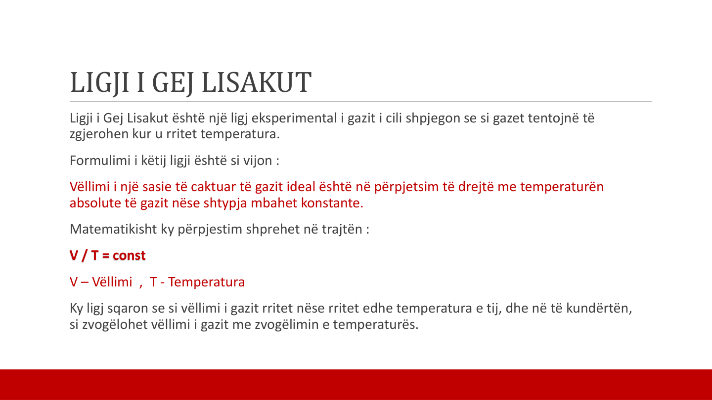
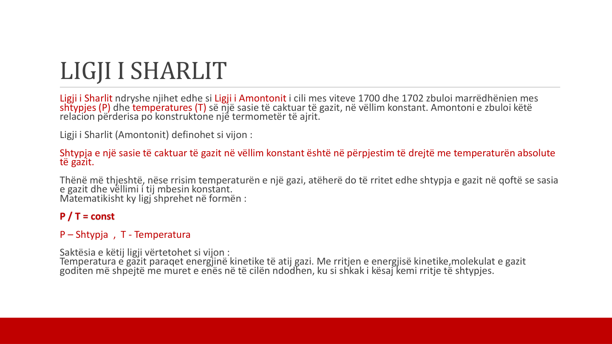
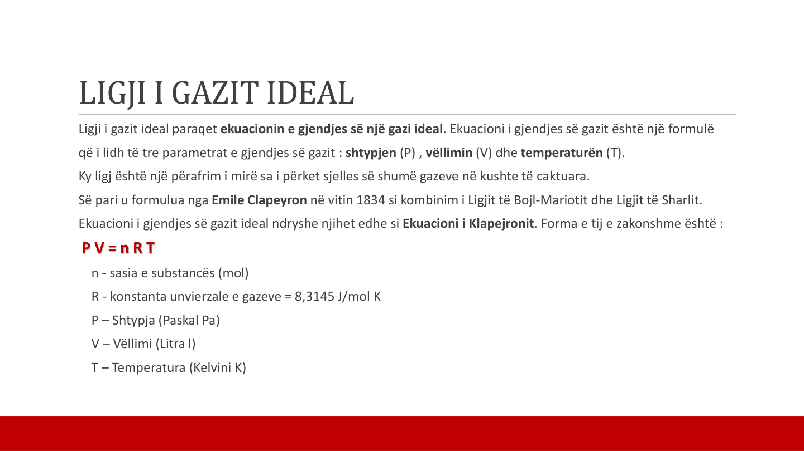
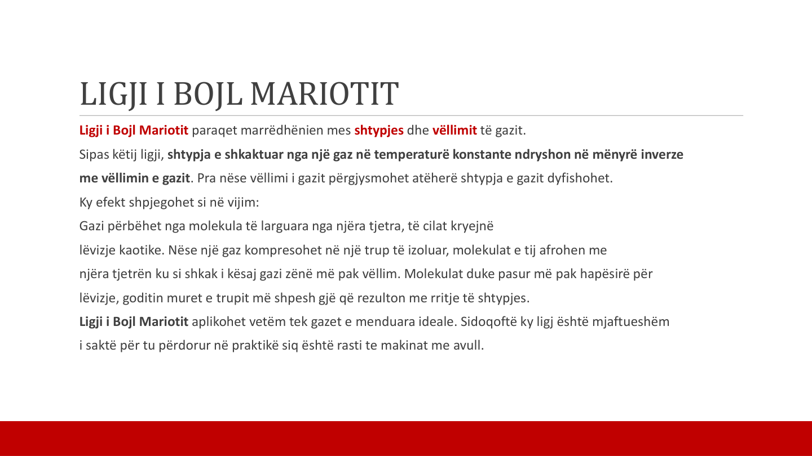
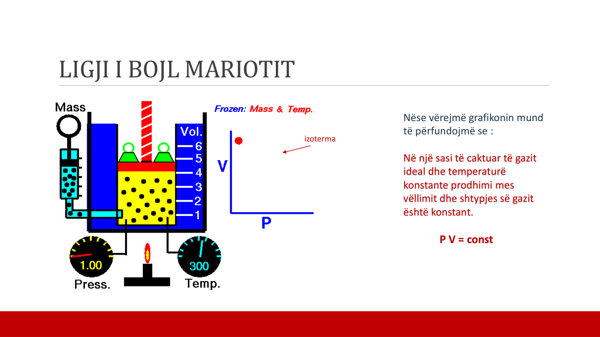

Ligjet e Gazeve Ideale
Ligjet e gazeve ideale përshkruajnë sjelljet e gazeve në kushte të ndryshme. Këta ligje janë themelet për të kuptuar sjelljen e gazeve dhe zbatohen në shumë aplikacione praktike.
Kuptimi i Gazit Ideal
Gazi ideal është një model ku molekulat goditen në mënyrë elastike dhe nuk ka forca ndërmolekulare. Shumë gaze reale i afrohen këtij modeli në kushte të caktuara.
Karakteristikat kryesore:
- Shtypja (P)
- Vëllimi (V)
- Temperatura (T)
Modeli 3D i Gjendjes së Gazit
Shikoni një përfaqësim vizual 3D të molekulave të gazit dhe si ato lëvizin në hapësirë.
Klikoni dhe tërhiqni për të eksploruar modelin 3D
Ligji i Gazit Ideal (Ekuacioni i Klapejronit)
Ky ligj lidh shtypjen, vëllimin, sasinë e substancës dhe temperaturën e gazit.
PV = nRT
Ku:
- P – Shtypja
- V – Vëllimi
- n – Sasia e substancës
- R – Konstanta e gazeve
- T – Temperatura
Ligji i Bojl-Mariotit
Në temperaturë konstante, shtypja e gazit është e kundërt me vëllimin: PV = const.
Ligji i Gej-Lisakut
Në shtypje konstante, vëllimi i gazit rritet në mënyrë proporcionale me temperaturën: V/T = const.
Ligji i Sharlit (Ligjit i Amontonit)
Në vëllim konstant, shtypja e gazit rritet me temperaturën: P/T = const.
Parametrat e Gazit
Temperatura, shtypja, vëllimi dhe sasia e substancës janë parametrat kryesorë që përcaktojnë gjendjen e një gazi.
Përshkrimi i Aparaturës Eksperimentale
Për të studiuar ligjet e gazeve në laborator përdoret një sistem me termostat, tub matës, merkuri dhe termometër. Këto elemente ndihmojnë në matjen e ndryshimeve të temperaturës, shtypjes dhe vëllimit.
- Termostati – ruan temperaturën konstante
- Tubi matës – mat vëllimin e gazit
- Merkuri – tregon ndryshimet e shtypjes
- Termometri – kontrollon temperaturën
Aparati Eksperimental
Për të verifikuar ligjet e gazeve përdoret aparaturë reale që tregon sesi ndryshimet e vëllimit dhe temperaturës ndikojnë në shtypje.

Skema e aparaturës eksperimentale

Të dhënat dhe rezultatet eksperimentale
Grafikët e Ligjeve
Grafikët përmes të dhënave eksperimentale demonstrojnë marrëdhëniet midis parametrave të gazit.

Ligji i Bojl-Mariotit (P-V)

Ligji i Gej-Lisakut (V-T)

Ligji i Sharlit (P-T)
Zbatimi Praktik i Ligjeve të Gazeve
Ligjet e gazeve përdoren në shumë teknologji të përditshme.
- Makinat me avull – funksionojnë me presion dhe vëllim.
- Klimatizimi – përdor relacionet mes temperaturës dhe vëllimit.
- Industria e gazeve – ruan dhe transporton gazra nën shtypje.